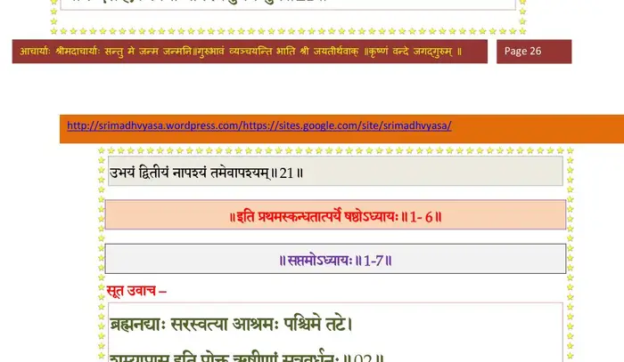
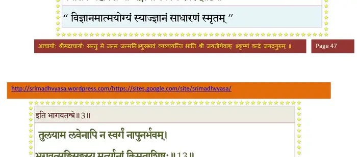
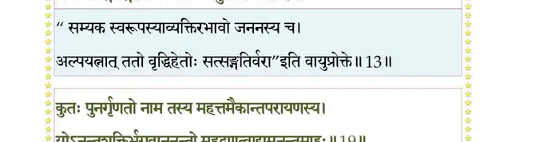
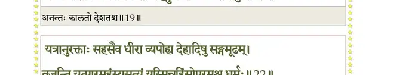
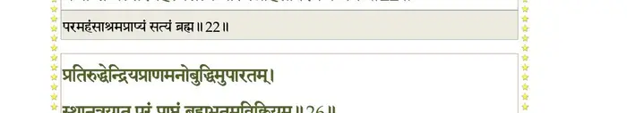
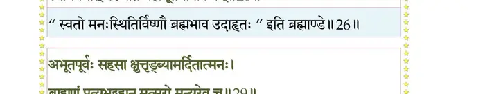
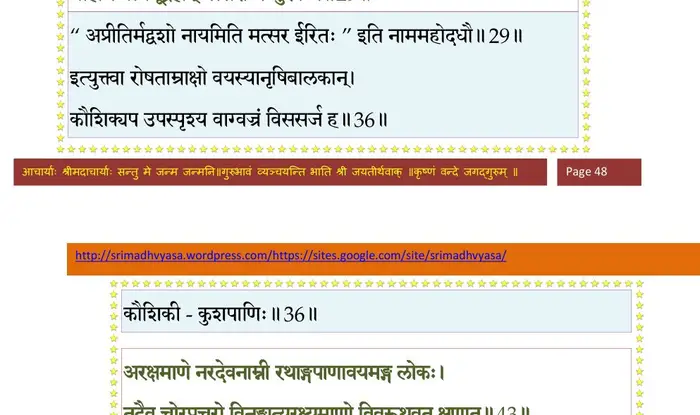
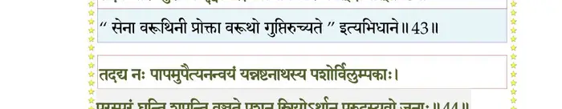
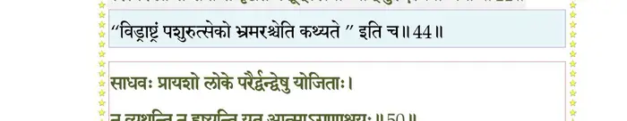
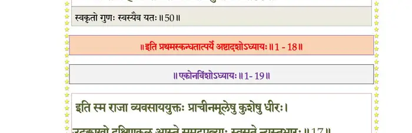

स्कन्ध 1 · अध्याय 18
श्लोक १
सूत उवाच–
यौ वै द्रौण्यस्त्रविप्लुष्टो न मातुरुदरे मृतः ।
अनुग्रहाद्भगवतः कृष्णस्याद्भुतकर्मणः।। १ ।।
यौ वै द्रौण्यस्त्रविप्लुष्टो न मातुरुदरे मृतः ।
अनुग्रहाद्भगवतः कृष्णस्याद्भुतकर्मणः।। १ ।।
श्लोक २
ब्रह्मशापोत्थिताद्यस्तु तक्षकात्प्राणविप्लवे ।
न सम्मुमोहोरुभयाद्भगवत्यर्पिताशयः।। २ ।।
न सम्मुमोहोरुभयाद्भगवत्यर्पिताशयः।। २ ।।
भागवततात्पर्यनिर्णय

श्लोक ३
उत्सृज्य सर्वतः सङ्गं विज्ञानार्जितसंस्थितिः ।
वैयासकेर्जहौ शिष्यः गङ्गायां स्वकलेवरम्।। ३ ।।
वैयासकेर्जहौ शिष्यः गङ्गायां स्वकलेवरम्।। ३ ।।
भागवततात्पर्यनिर्णय

श्लोक ४
नोत्तमश्लोकवार्तानां जुषतां तत्कथामृतम् ।
स्यात्सम्भ्रमोऽन्तकालेऽपि स्मरतां तत्पदाम्बुजम्।। ४ ।।
स्यात्सम्भ्रमोऽन्तकालेऽपि स्मरतां तत्पदाम्बुजम्।। ४ ।।
श्लोक ५
तावत्कलिर्न प्रभवेत्प्रविष्टोऽपीह सर्वतः ।
यावदीशो महानुर्व्यामाभिमन्यव एकराट्।। ५ ।।
यावदीशो महानुर्व्यामाभिमन्यव एकराट्।। ५ ।।
श्लोक ६
यस्मिन्नहनि यर्ह्येव भगवानुत्ससर्ज गाम् ।
तदैवेहानुवृत्तोसावधर्मप्रभवः कलिः।। ६ ।।
तदैवेहानुवृत्तोसावधर्मप्रभवः कलिः।। ६ ।।
श्लोक ७
नानुद्वेष्टि कलिं सम्राट् सारङ्ग इव सारभुक् ।
कुशलान्याशु सिद्ध्यन्ति नेतराणि कृतानि यत्।। ७ ।।
कुशलान्याशु सिद्ध्यन्ति नेतराणि कृतानि यत्।। ७ ।।
श्लोक ८
किन्तु बालेषु शूरेण कलिना शूरभीरुणा ।
अप्रमत्तः प्रमत्तेषु यो वृको नृषु वर्तते।। ८ ।।
अप्रमत्तः प्रमत्तेषु यो वृको नृषु वर्तते।। ८ ।।
श्लोक ९
उपवर्णितमेतद्वः पुण्यं पारीक्षितं मया ।
वासुदेवकथोपेतमाख्यानं यदपृच्छथ।। ९ ।।
वासुदेवकथोपेतमाख्यानं यदपृच्छथ।। ९ ।।
श्लोक १०
या याः कथाः भगवतः कथनीयोरुकर्मणः ।
गुणकर्माश्रया पुम्भिः सेव्यास्तास्ताः बुभूषुभिः।। १० ।।
गुणकर्माश्रया पुम्भिः सेव्यास्तास्ताः बुभूषुभिः।। १० ।।
श्लोक ११
ऋषय ऊचुः–
सूत जीव समाः सौम्य शाश्वतीर्विशदं यशः ।
यस्त्वं शंसति कृष्णस्य मर्त्यानाममृतं हि नः।। ११ ।।
सूत जीव समाः सौम्य शाश्वतीर्विशदं यशः ।
यस्त्वं शंसति कृष्णस्य मर्त्यानाममृतं हि नः।। ११ ।।
श्लोक १२
कर्मण्यस्मिन्ननाश्वास्ये धूमधूम्रात्मनां भवान् ।
आपाययति गोविन्दपादपद्मासवं मधु।। १२ ।।
आपाययति गोविन्दपादपद्मासवं मधु।। १२ ।।
श्लोक १३
तुलयाम लवेनाऽपि न स्वर्गं नापुनर्भवम् ।
भगवत्सङ्गिसङ्गस्य मर्त्यानां किमुताशिषः।। १३ ।।
भगवत्सङ्गिसङ्गस्य मर्त्यानां किमुताशिषः।। १३ ।।
भागवततात्पर्यनिर्णय

श्लोक १४
को नाम तृप्येद्रसवित्कथायां महत्तमैकान्तपरायणस्य ।
नान्तं गुणानामगुणस्य जग्मुर्योगेश्वरा ये भवपाद्ममुख्याः।। १४ ।।
नान्तं गुणानामगुणस्य जग्मुर्योगेश्वरा ये भवपाद्ममुख्याः।। १४ ।।
श्लोक १५
ततो भवान् वै भगवत्प्रधानो महत्तमैकान्तपरायणस्य ।
हरेरुदारं चरितं विशुद्धं शुश्रूषतां नो वितनोतु विद्वान्।। १५ ।।
हरेरुदारं चरितं विशुद्धं शुश्रूषतां नो वितनोतु विद्वान्।। १५ ।।
श्लोक १६
तन्नः परं पुण्यमसंवृतार्थमाख्यानमत्यद्भुतयोगनिष्ठम् ।
आख्याह्यनन्ताचरितोपपन्नं पारीक्षितं भागवताभिरामम्।। १६ ।।
आख्याह्यनन्ताचरितोपपन्नं पारीक्षितं भागवताभिरामम्।। १६ ।।
श्लोक १७
स वै महाभागवतः परीक्षिद्येनापवर्गाख्यमदभ्रबुद्धिः ।
ज्ञानेन वैयासकिशब्दितेन भेजे खगेन्द्रध्वजपादमूलम्।। १७ ।।
ज्ञानेन वैयासकिशब्दितेन भेजे खगेन्द्रध्वजपादमूलम्।। १७ ।।
श्लोक १८
सूत उवाच–
अहो वयं जन्मभृतो महात्मन् वृद्धानुवृत्यापि विलोमजाताः ।
दौष्कुल्यमाधिं विधुनोति शीघ्रं महत्तमानामभिधानयोगः।। १८ ।।
अहो वयं जन्मभृतो महात्मन् वृद्धानुवृत्यापि विलोमजाताः ।
दौष्कुल्यमाधिं विधुनोति शीघ्रं महत्तमानामभिधानयोगः।। १८ ।।
श्लोक १९
कुतः पुनर्गृणतो नाम तस्य महत्तमैकान्तपरायणस्य ।
योऽनन्तशक्तिर्भगवाननन्तो महद्गुणत्वाद्यमनन्तमाहुः।। १९ ।।
योऽनन्तशक्तिर्भगवाननन्तो महद्गुणत्वाद्यमनन्तमाहुः।। १९ ।।
भागवततात्पर्यनिर्णय

श्लोक २०
एतावताऽलं ननु सूचितेन गुणैरसाम्येऽनतिशायनेऽस्य ।
हित्वेतरान् प्रार्थयतो विभूतिर्यस्याङ्घ्रिरेणुं जुषतेऽनभीप्सोः।। २० ।।
हित्वेतरान् प्रार्थयतो विभूतिर्यस्याङ्घ्रिरेणुं जुषतेऽनभीप्सोः।। २० ।।
श्लोक २१
अथापि यत्पादनखावसृष्टं जगद्विरिञ्चोपहृतार्हणाम्भः ।
सेशं पुनात्यन्यतमो मुकुन्दात्को नाम लोके भगवत्पदार्थः।। २१ ।।
सेशं पुनात्यन्यतमो मुकुन्दात्को नाम लोके भगवत्पदार्थः।। २१ ।।
श्लोक २२
यत्रानुरक्ताः सहसैव धीरा व्यपोह्य देहादिषु सङ्गमूढम् ।
व्रजन्ति तत्पारमहंस्यसत्यं यस्मिन्नहिंसोपरमश्च धर्मः।। २२ ।।
व्रजन्ति तत्पारमहंस्यसत्यं यस्मिन्नहिंसोपरमश्च धर्मः।। २२ ।।
भागवततात्पर्यनिर्णय

श्लोक २४
अहं हि पृष्टोऽस्य गुणान् भवद्भिर्व्याचक्ष१ आत्मावगमोऽत्र यावान् ।
नभः पतन्त्यात्मसमं पतत्रिणस्तथा समं विष्णुगतिं विपश्चितः ।।
एकदा धनुरुद्यम्य विचरन् मृगयां वने ।
मृगाननुगतः श्रान्तः क्षुधितस्तृषितो भृशम्।। २४ ।।
नभः पतन्त्यात्मसमं पतत्रिणस्तथा समं विष्णुगतिं विपश्चितः ।।
एकदा धनुरुद्यम्य विचरन् मृगयां वने ।
मृगाननुगतः श्रान्तः क्षुधितस्तृषितो भृशम्।। २४ ।।
श्लोक २५
जलाशयमचक्षाणः प्रविवेश स आश्रमम् ।
ददर्श मुनिमासीनं शान्तं मीलितलोचनम्।। २५ ।।
ददर्श मुनिमासीनं शान्तं मीलितलोचनम्।। २५ ।।
श्लोक २६
प्रतिरुद्धेन्द्रियप्राणमनोबुद्धिमुपारतम् ।
स्थानत्रयात्परं प्राप्तं ब्रह्मभूतमविक्रियम्।। २६ ।।
स्थानत्रयात्परं प्राप्तं ब्रह्मभूतमविक्रियम्।। २६ ।।
भागवततात्पर्यनिर्णय

श्लोक २७
विप्रकीर्णजटाच्छन्नं रौरवेणाजिनेन च ।
विशुष्यत्तालुरुदकं तथाभूतमयाचत।। २७ ।।
विशुष्यत्तालुरुदकं तथाभूतमयाचत।। २७ ।।
श्लोक २८
अलब्धतृणभूम्यादिरसंप्राप्तार्घ्यसूनृतः ।
अवज्ञातमिवाऽत्मानं मन्यमानश्चुकोप ह।। २८ ।।
अवज्ञातमिवाऽत्मानं मन्यमानश्चुकोप ह।। २८ ।।
श्लोक २९
अभूतपूर्वः सहसा क्षुत्तृड्भ्यामर्दितात्मनः ।
ब्राह्मणं प्रत्यभूद्ब्रह्मन् मत्सरो मन्युरेव च।। २९ ।।
ब्राह्मणं प्रत्यभूद्ब्रह्मन् मत्सरो मन्युरेव च।। २९ ।।
भागवततात्पर्यनिर्णय

श्लोक ३०
स तु ब्रह्मऋषेरंसे गतासुमुरगं रुषा ।
विनिर्गच्छन् धनुष्कोट्या निधाय पुरमागतः१।। ३० ।।
विनिर्गच्छन् धनुष्कोट्या निधाय पुरमागतः१।। ३० ।।
श्लोक ३१
एष किं निभृताशेषकरणो मीलितेक्षणः ।
मुधा(मृषा)समाधिराहोस्वित् किन्नः स्यात्क्षत्रबन्धुभिः।। ३१ ।।
मुधा(मृषा)समाधिराहोस्वित् किन्नः स्यात्क्षत्रबन्धुभिः।। ३१ ।।
श्लोक ३२
तस्य पुत्रोऽतितेजस्वी विहरन् बालकोऽर्भकैः ।
राज्ञाऽघं प्रापितं तातं श्रुत्वा तत्रेदमब्रवीत्।। ३२ ।।
राज्ञाऽघं प्रापितं तातं श्रुत्वा तत्रेदमब्रवीत्।। ३२ ।।
श्लोक ३३
अहो अधर्मः पालानां पृथ्व्या बलिभुजामिव ।
स्वामिन्यघं यद्दासानां द्वारपानां शुनामिव।। ३३ ।।
स्वामिन्यघं यद्दासानां द्वारपानां शुनामिव।। ३३ ।।
श्लोक ३४
ब्राह्मणैः क्षत्रबन्धुर्हि द्वारपालो निरूपितः ।
स कथं तद्गृहे द्वाःस्थः सभाण्डं भोक्तुमर्हति।। ३४ ।।
स कथं तद्गृहे द्वाःस्थः सभाण्डं भोक्तुमर्हति।। ३४ ।।
श्लोक ३५
कृष्णे गते भगवति शास्तर्युत्पथगामिनाम् ।
तान् भिन्नसेतूनद्याहं शास्मि पश्यत मे बलम्।। ३५ ।।
तान् भिन्नसेतूनद्याहं शास्मि पश्यत मे बलम्।। ३५ ।।
श्लोक ३६
इत्युक्त्वा रोषताम्राक्षः वयस्यानृषिबालकान् ।
कौशिक्यप उपस्पृश्य वाग्वज्रं विससर्ज ह।। ३६ ।।
कौशिक्यप उपस्पृश्य वाग्वज्रं विससर्ज ह।। ३६ ।।
श्लोक ३७
इतो लङ्घितमर्यादं तक्षकः सप्तमेऽहनि ।
धक्ष्यति स्म कुलाङ्गारं चोदितो मे पितृद्रुहम्।। ३७ ।।
धक्ष्यति स्म कुलाङ्गारं चोदितो मे पितृद्रुहम्।। ३७ ।।
श्लोक ३८
ततोऽभ्येत्याश्रमं बालो गले सर्पकलेवरम् ।
पितरं वीक्ष्य दुःखार्तो मुक्तकण्ठो रुरोद ह।। ३८ ।।
पितरं वीक्ष्य दुःखार्तो मुक्तकण्ठो रुरोद ह।। ३८ ।।
श्लोक ३९
स वा (वै) आङ्गिरसो ब्रह्मन् श्रुत्वा सुतविलापितम् ।
उन्मील्य शनकैर्नेत्रे दृष्ट्वा चांसे मृतोरगम्।। ३९ ।।
उन्मील्य शनकैर्नेत्रे दृष्ट्वा चांसे मृतोरगम्।। ३९ ।।
श्लोक ४०
विसृज्य पुत्रं पप्रच्छ वत्स यस्माद्विरोदिषि ।
केन वा ते विप्रकृतमित्युक्तः स न्यवेदयत्।। ४० ।।
केन वा ते विप्रकृतमित्युक्तः स न्यवेदयत्।। ४० ।।
श्लोक ४१
निशम्य शप्तमतदर्हं नरेन्द्रं स ब्राह्मणो नात्मजमभ्यनन्दत् ।
अहो बतांहो महदज्ञ ते कृतमल्पीयसि द्रोह उरुश्रमो धृतः।। ४१ ।।
अहो बतांहो महदज्ञ ते कृतमल्पीयसि द्रोह उरुश्रमो धृतः।। ४१ ।।
श्लोक ४३
न वै नृभिर्नरदेवोऽपराध्यः तं शप्तुमर्हस्यविपक्वबुद्धे ।
यत्तेजसा दुर्विषहेण गुप्ता विन्दन्ति भद्राण्यकुतोभयाः प्रजाः।। ४२
अरक्षमाणे नरदेवनामि्न रथाङ्गपाणावयमङ्ग लोकः ।
तदा हि चोरप्रचुरो विनङ्क्षत्यरक्ष्यमाणो विवरूथवत्क्षणात्।। ४३ ।।
यत्तेजसा दुर्विषहेण गुप्ता विन्दन्ति भद्राण्यकुतोभयाः प्रजाः।। ४२
अरक्षमाणे नरदेवनामि्न रथाङ्गपाणावयमङ्ग लोकः ।
तदा हि चोरप्रचुरो विनङ्क्षत्यरक्ष्यमाणो विवरूथवत्क्षणात्।। ४३ ।।
भागवततात्पर्यनिर्णय

श्लोक ४५
तदद्य नः पापमुपैत्यनन्वयं यन्नष्टनाथस्य पशोर्विलुम्पकाः ।
परस्परं घ्रन्ति शपन्ति वृञ्जते पशून् स्त्रियोऽर्थान् पुरदस्यवो जनाः ।।
तदार्यधर्मश्च विलीयते नृणां वर्णाश्रमाचारयुतस्त्रयीमयः ।
ततोऽर्थकामाभिनिवेशितात्मनां शुनां कपीनामिव वर्णसङ्करः।।४५।।
परस्परं घ्रन्ति शपन्ति वृञ्जते पशून् स्त्रियोऽर्थान् पुरदस्यवो जनाः ।।
तदार्यधर्मश्च विलीयते नृणां वर्णाश्रमाचारयुतस्त्रयीमयः ।
ततोऽर्थकामाभिनिवेशितात्मनां शुनां कपीनामिव वर्णसङ्करः।।४५।।
भागवततात्पर्यनिर्णय

श्लोक ४६
धर्मपालो नरपतिः स तु सम्राट् बृहच्छ्रवाः ।
साक्षान्महाभागवतो राजर्षिर्हयमेध(रा)याट् ।
क्षुत्तुट्च्छ्रमान्वितो दीनो नैवास्मच्छापमर्हति।। ४६ ।।
साक्षान्महाभागवतो राजर्षिर्हयमेध(रा)याट् ।
क्षुत्तुट्च्छ्रमान्वितो दीनो नैवास्मच्छापमर्हति।। ४६ ।।
श्लोक ४७
अपापेषु स्वभृत्येषु बालेनापक्वबुद्धिना ।
पापं कृतं तद्भगवान्सर्वात्मा क्षन्तुमर्हति।। ४७ ।।
पापं कृतं तद्भगवान्सर्वात्मा क्षन्तुमर्हति।। ४७ ।।
श्लोक ४८
तिरस्कृता विप्रलब्धाः शप्ताः क्षिप्ताः हता अपि ।
नास्य तत्प्रतिकुर्वन्ति तद्भक्ताः प्रभवोऽपि हि।। ४८ ।।
नास्य तत्प्रतिकुर्वन्ति तद्भक्ताः प्रभवोऽपि हि।। ४८ ।।
श्लोक ४९
इति पुत्रकृताघेन सोऽनुतप्तो महामुनिः ।
स्वयं विप्रकृतो राज्ञा नैवाऽघं तदचिन्तयत्।। ४९ ।।
स्वयं विप्रकृतो राज्ञा नैवाऽघं तदचिन्तयत्।। ४९ ।।
श्लोक ५०
साधवः प्रायशो लोके परैर्द्वन्द्वेषु योजिताः ।
न व्यथन्ति न हृष्यन्ति यत आत्मा(ऽ)गुणाश्रयः।। ५० ।।
न व्यथन्ति न हृष्यन्ति यत आत्मा(ऽ)गुणाश्रयः।। ५० ।।
भागवततात्पर्यनिर्णय

।। इति श्रीमद्भागवते प्रथमस्कन्धे अष्टादशोऽध्यायः ।।